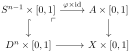
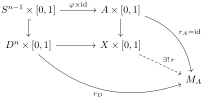

By
Proposition 2.10.31, it suffices to show that
\(X\times\{0\}\cup A\times[0,1]\) is a retract of
\(X\times[0,1]\text{.}\) We build this retraction inductively over the skeletal filtration.
Step 1: single cell attachment. Suppose
\(X=A\amalg_\varphi D^n\) is obtained from
\(A\) by attaching a single
\(n\)-cell via
\(\varphi\colon S^{n-1}\to A\text{.}\) Write
\(M_A := X\times\{0\}\cup A\times[0,1]\text{.}\) The key observation is that taking products with
\([0,1]\) preserves the pushout structure: the cylinder
\(X\times[0,1]\) is obtained by gluing
\(D^n\times[0,1]\) to
\(A\times[0,1]\) along
\(S^{n-1}\times[0,1]\) via
\(\varphi\times\mathrm{id}\text{:}\)

Pushout diagram showing that \(X\times[0,1]\) is the pushout of \(A\times[0,1]\) and \(D^n\times[0,1]\) over \(S^{n-1}\times[0,1]\text{.}\)
By
Lemma 2.10.32, there is a retraction
\(r_D\colon D^n\times[0,1]\to D^n\times\{0\}\cup S^{n-1}\times[0,1]\text{.}\) Define
\(r_A\colon A\times[0,1]\to A\times[0,1]\) to be the identity. On the overlap
\(S^{n-1}\times[0,1]\text{,}\) both maps agree:
\(r_D\) restricts to the identity on
\(S^{n-1}\times[0,1]\) (since these points lie on the lateral boundary, which is fixed by the retraction), and
\(r_A\) is the identity. By the universal property of the pushout,
\(r_A\) and
\(r_D\) assemble into a single continuous map
\(r\colon X\times[0,1]\to M_A\text{:}\)

Diagram showing how the retraction \(r_A\) on \(A\times[0,1]\) and \(r_D\) on \(D^n\times[0,1]\) assemble via the pushout universal property into the global retraction \(r\text{.}\)
Since
\(r_A\) and
\(r_D\) are both retractions onto their respective parts of
\(M_A\text{,}\) the map
\(r\) is a retraction of
\(X\times[0,1]\) onto
\(M_A\text{.}\)
Step 2: induction over skeleta. For a general CW pair
\((X,A)\text{,}\) write
\(X_k := A\cup X^{(k)}\) for the union of
\(A\) with the
\(k\)-skeleton of
\(X\text{.}\) Each
\(X_{k+1}\) is obtained from
\(X_k\) by attaching
\((k+1)\)-cells. By Step 1 (applied to each cell and assembled via the pushout over the disjoint union of attaching maps), the pair
\((X_{k+1}, X_k)\) has the HEP, so there is a retraction
\(r_k\colon X_{k+1}\times[0,1]\to X_{k+1}\times\{0\}\cup X_k\times[0,1]\text{.}\)
Composing these retractions telescopically gives a retraction of
\(X_k\times[0,1]\) onto
\(X_k\times\{0\}\cup A\times[0,1]\) for each finite
\(k\text{.}\) For the passage to
\(X = \bigcup_k X_k\text{,}\) we use the fact that
\(X\) carries the weak topology with respect to the filtration
\(\{X_k\}\text{:}\) a map out of
\(X\times[0,1]\) is continuous if and only if its restriction to each
\(X_k\times[0,1]\) is continuous. The retractions at each stage are compatible (each extends the previous), so they assemble into a retraction
\(r\colon X\times[0,1]\to X\times\{0\}\cup A\times[0,1]\text{.}\)